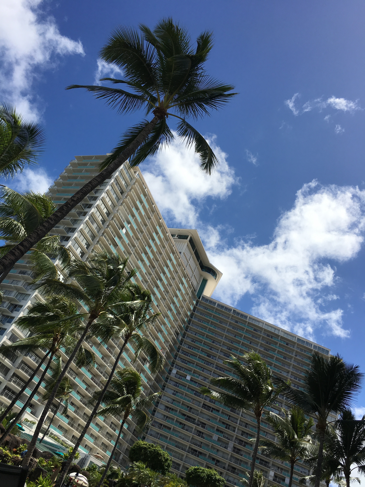

Hawaii!
I had been wanting to go to Hawaii forever and I finally got the chance! It met every expectation! I felt like I was in a dream full of lush landscape and an effortless atmosphere. There is so much to do on and off the resort. You can take adventures through all the national parks or take a drive to take in all the scenery and different locations. Everywhere you turn there is something new and amazing to experience.
We rented a jeep and took the beautiful scenic drive to the North Shore! It was great to sit and watch the gorgeous waves! There were food trucks that offered a wide variety of amazing fresh food. It was great to relax and enjoy the food in paradise! There was nothing else like it! The ride there and back made it even better because we drove overlooking the mountains and the winding roads took us into the natural environment.There is no better place to take an adventure and just do your own thing and take in all Hawaii has to offer!
Spend the days on the resort and enjoy the paradise all around you! There are plenty of exciting things that could be found on and around resorts. Here are some shots of the views from my resort in Waikiki. Absolutely breathtaking views and magnificent beaches and pools. If you're looking for more to do, I found that the resorts really did help me get the most of my trip and shared with me awesome things to go do! I visited the Pearl Harbor Memorial and even went to the Dole Plantation and enjoyed delicious treats!!
